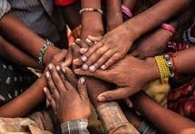
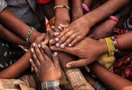

About Us
Founded in 1988 by Madludlu in her own backyard, iKhayalam has been a beacon of hope in the Khayelitsha community. Born from the desire to uplift and empower those around her, Madludlu's vision was simple yet profound—to create a safe space for vulnerable members of the community to receive support, guidance, and resources. Over the years, iKhayalam has grown from a small backyard initiative into a well-respected NGO, touching the lives of countless individuals through education, healthcare, and social development programs.
Located in the heart of Khayelitsha, one of the largest and fastest-growing townships in the Western Cape, iKhayalam focuses on addressing the socio-economic challenges faced by the community. Our mission is to empower individuals, especially women and children, by providing access to educational resources, healthcare services, and sustainable development initiatives.
For over three decades, iKhayalam has remained steadfast in its commitment to community development and upliftment, with programs that aim to create long-lasting, positive change. From after-school programs for children to vocational training for adults, we continue to build a future where the people of Khayelitsha can thrive and achieve their full potential.
 
